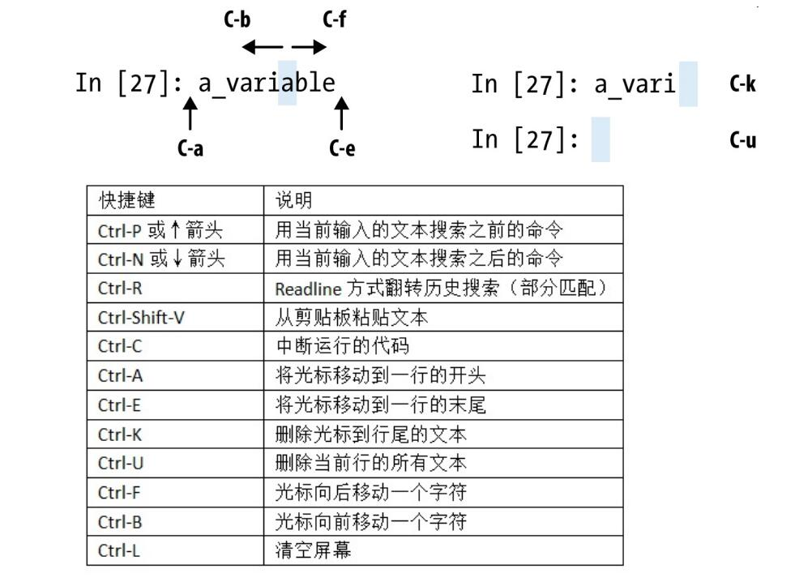

5.7
一些行话：
Munge/Munging/Wrangling：数据规整
Pseudocode 伪码
Syntactic sugar 语法糖
Tab可以补全~
在变量前后使用问号，可以显示对象的信息
jupyter notebook快捷键：

- 魔术命令是在指令前添加百分号%前缀。例如，可以用
%timeit测量任何Python语句,用%quickref或%magic学习下所有特殊命令。

- 可以用
obj.attribute_name访问属性和方法 - 经常地，你可能不关心对象的类型，只关心对象是否有某些方法或用途。这通常被称为“鸭子类型”😃来自“走起来像鸭子、叫起来像鸭子，那么它就是鸭子”的说法。
- 三元表达式
"positive" if x >= 0 else "negative - datetime
from datetime import datetime, date, time
dt = datetime(2011, 10, 29, 20, 30, 21)
dt.strftime('%m/%d/%Y %H:%M')#strftime 方法可以将datetime格式化为字符串
datetime.strptime('20091031', '%Y%m%d')
#strptime 可以将字符串转换成 datetime 对象。